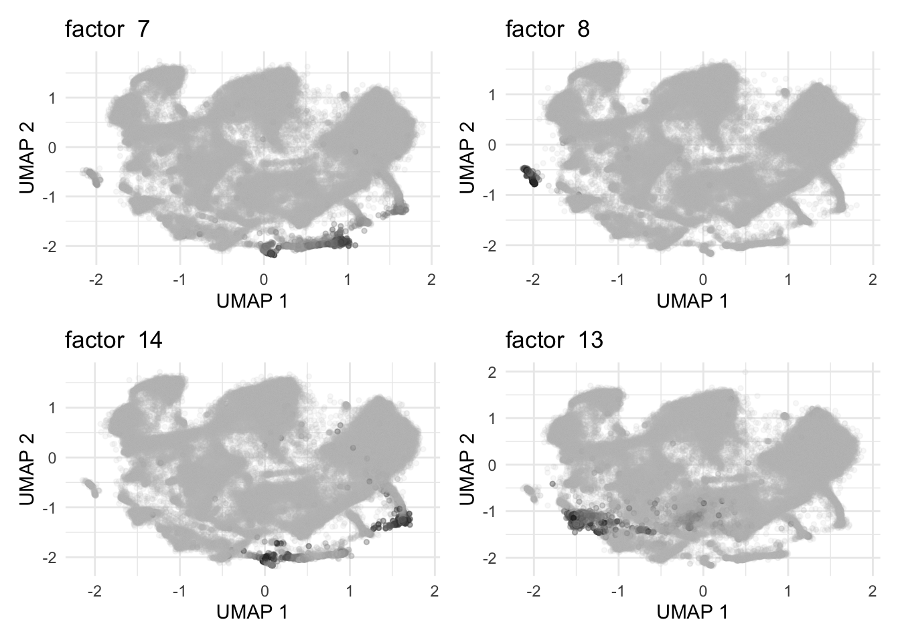

Last updated: 2025-10-29
Checks: 7 0
Knit directory: immgen-t-factors/analysis/
This reproducible R Markdown analysis was created with workflowr (version 1.7.2). The Checks tab describes the reproducibility checks that were applied when the results were created. The Past versions tab lists the development history.
Great! Since the R Markdown file has been committed to the Git repository, you know the exact version of the code that produced these results.
Great job! The global environment was empty. Objects defined in the global environment can affect the analysis in your R Markdown file in unknown ways. For reproduciblity it’s best to always run the code in an empty environment.
The command set.seed(1) was run prior to running the
code in the R Markdown file. Setting a seed ensures that any results
that rely on randomness, e.g. subsampling or permutations, are
reproducible.
Great job! Recording the operating system, R version, and package versions is critical for reproducibility.
Nice! There were no cached chunks for this analysis, so you can be confident that you successfully produced the results during this run.
Great job! Using relative paths to the files within your workflowr project makes it easier to run your code on other machines.
Great! You are using Git for version control. Tracking code development and connecting the code version to the results is critical for reproducibility.
The results in this page were generated with repository version 843dcaf. See the Past versions tab to see a history of the changes made to the R Markdown and HTML files.
Note that you need to be careful to ensure that all relevant files for
the analysis have been committed to Git prior to generating the results
(you can use wflow_publish or
wflow_git_commit). workflowr only checks the R Markdown
file, but you know if there are other scripts or data files that it
depends on. Below is the status of the Git repository when the results
were generated:
Ignored files:
Ignored: .Rhistory
Ignored: .Rproj.user/
Ignored: analysis/.Rhistory
Ignored: analysis/site_libs/
Ignored: code/.Rhistory
Ignored: docs 2/
Untracked files:
Untracked: .DS_Store
Untracked: .gitignore
Untracked: analysis/.DS_Store
Untracked: analysis/conditional_analysis.rmd
Untracked: analysis/further_validation_f68.rmd
Untracked: analysis/level2_organ.rmd
Untracked: code/.DS_Store
Untracked: code/Figure1.R
Untracked: code/ROC.R
Untracked: code/analyze_protein_selected.R
Untracked: code/analyze_protein_selected.sbatch
Untracked: code/analyze_protein_selected_lognorm.R
Untracked: code/analyze_protein_selected_lognorm.sbatch
Untracked: code/analyze_protein_selected_positive.R
Untracked: code/analyze_protein_selected_positive.sbatch
Untracked: code/compare_greedy_back.R
Untracked: code/replicate_whole_data.sbatch
Untracked: data/.DS_Store
Untracked: data/annot_level1.rds
Untracked: data/annot_level2.rds
Untracked: data/condition_broad.rds
Untracked: data/condition_broad_AUC.rds
Untracked: data/condition_broad_AUC_CD8.rds
Untracked: data/condition_detailed.rds
Untracked: data/condition_detailed_AUC.rds
Untracked: data/condition_detailed_AUC_CD8.rds
Untracked: data/conditional_analysis_factor.rds
Untracked: data/conditional_analysis_factor_stats.rds
Untracked: data/factor_matching_results.csv
Untracked: data/factor_matching_results_noback.csv
Untracked: data/fit1_summary.qs
Untracked: data/fit1_summary_noback.qs
Untracked: data/fit2_summary.qs
Untracked: data/fit2_summary_noback.qs
Untracked: data/flash_fixed_F_pm.rds
Untracked: data/flash_fixed_loading.rds
Untracked: data/flashier_snmf_summary.rds
Untracked: data/level_1_AUC.rds
Untracked: data/moran_list_umap.rds
Untracked: data/organ.rds
Untracked: data/organ_AUC.rds
Untracked: data/organ_AUC_healthy.rds
Untracked: data/organ_healthy.rds
Untracked: data/protein_flash_selected_summary.rds
Untracked: data/protein_flash_selected_summary_lognorm.rds
Untracked: data/protein_flash_selected_summary_pos.rds
Untracked: data/protein_mat.rds
Untracked: data/protein_mat_normalized.rds
Untracked: data/protein_mat_normalized_lognorm.rds
Untracked: data/replicate_whole_data.sbatch
Untracked: data/seurat_meta.rds
Untracked: data/umap_result.rds
Untracked: figures/
Unstaged changes:
Modified: analysis/half_validation_hungarian.rmd
Modified: analysis/half_validation_hungarian_noback.rmd
Deleted: code/halves_validation.R
Note that any generated files, e.g. HTML, png, CSS, etc., are not included in this status report because it is ok for generated content to have uncommitted changes.
These are the previous versions of the repository in which changes were
made to the R Markdown (analysis/UMAP_factors.rmd) and HTML
(docs/UMAP_factors.html) files. If you’ve configured a
remote Git repository (see ?wflow_git_remote), click on the
hyperlinks in the table below to view the files as they were in that
past version.
| File | Version | Author | Date | Message |
|---|---|---|---|---|
| Rmd | 843dcaf | Ziang Zhang | 2025-10-29 | workflowr::wflow_publish("analysis/UMAP_factors.rmd") |
| html | 7d56be1 | Ziang Zhang | 2025-10-09 | Build site. |
| Rmd | a0c6a66 | Ziang Zhang | 2025-10-09 | workflowr::wflow_publish("analysis/UMAP_factors.rmd") |
| html | 1e9568c | Ziang Zhang | 2025-10-09 | Build site. |
| Rmd | 629cdf3 | Ziang Zhang | 2025-10-09 | workflowr::wflow_publish("analysis/UMAP_factors.rmd") |
| html | 764235a | Ziang Zhang | 2025-10-09 | Build site. |
| Rmd | 4db4de5 | Ziang Zhang | 2025-10-09 | workflowr::wflow_publish("analysis/UMAP_factors.rmd") |
source("https://raw.githubusercontent.com/stephenslab/single-cell-jamboree/refs/heads/main/code/group_factors.R")
source("https://raw.githubusercontent.com/stephenslab/single-cell-jamboree/refs/heads/main/code/plot_loadings_on_umap.R")
library(Seurat)
library(Matrix)
library(data.table)
library(flashier)
library(ggplot2)
library(patchwork)
library(cowplot)
library(RColorBrewer)
library(Biobase)
library(ggpubr)
library(gridExtra)
library(fastTopics)
library(tidyverse)
library(moranfast)
data_path <- "../data/"
code_path <- "../code/"
# data_path <- "data/"
# code_path <- "code/"
source(paste0(code_path, "ROC.R"))
umap_result <- readRDS(paste0(data_path, "umap_result.rds"))
colnames(umap_result) <- c("UMAP_1", "UMAP_2")
seurat_meta <- readRDS(paste0(data_path, "seurat_meta.rds"))
flashier_snmf_summary <- readRDS(paste0(data_path, "flashier_snmf_summary.rds"))
colnames(flashier_snmf_summary$F_pm) <- paste0("K", 1:ncol(flashier_snmf_summary$F_pm))plot_loadings_on_umap <- function(umap, loading, factor_num, size = 3) {
gplot <- ggplot(umap, aes(x = UMAP_1, y = UMAP_2)) +
geom_point(size = size, aes(alpha = loading, color = loading),
show.legend = FALSE) +
labs(title = paste("factor ", factor_num) , x = "UMAP 1", y = "UMAP 2") +
theme_minimal() +
scale_color_gradient2(low="#f0f0f0", mid="#bdbdbd", high= "black") ##636363")
return(gplot)
}Normalization:
# Normalize the L matrix based on 99 quantile
D <- diag(1 / apply(flashier_snmf_summary$L_pm, 2, function(x) quantile(x,0.99)))
L_pm <- flashier_snmf_summary$L_pm %*% D
F_pm <- flashier_snmf_summary$F_pm %*% solve(D)
colnames(F_pm) <- paste0("K", 1:ncol(F_pm))
cells_flashier <- rownames(flashier_snmf_summary$L_pm)
cells_seurat <- seurat_meta$cellID
which(!cells_flashier %in% cells_seurat)[1] 140070 505759L_pm <- L_pm[cells_flashier %in% cells_seurat, ]
all(rownames(L_pm) == cells_seurat)[1] TRUEL_pm_old <- L_pm
colnames(L_pm_old) <- paste0("K", 1:ncol(L_pm_old))
L_pm <- L_pm_old[, flashier_snmf_summary$pve > 1e-4]compute_moran <- function(loading_index, sample_size = 10000){
sample_index <- sample(1:nrow(L_pm_old), size = min(sample_size, nrow(L_pm_old)), replace = FALSE)
loading <- L_pm_old[sample_index, loading_index]
# based on umap
moran <- moranfast(x = loading, c1 = umap_result[sample_index,1], c2 = umap_result[sample_index,2])
return(moran)
}
moran_list <- list()
for (i in 1:ncol(L_pm_old)) {
# cat("Computing Moran's I for factor", i, "\n")
moran <- compute_moran(i)
moran_list[[i]] <- moran
}
saveRDS(moran_list, file = paste0(data_path, "moran_list_umap.rds"))Find the top factors with highest Moran’s I
# read the saved moran list
moran_list <- readRDS(paste0(data_path, "moran_list_umap.rds"))
moran_values <- sapply(moran_list, function(x) x$observed)
names(moran_values) <- paste0("K", 1:length(moran_values))
moran_values_sorted <- order(moran_values, decreasing = TRUE)
moran_values_sorted [1] 3 7 58 62 93 8 46 171 29 14 100 30 13 10 150 2 68 6
[19] 12 154 162 22 76 127 11 107 181 80 53 63 72 1 153 25 21 170
[37] 121 151 5 177 35 18 9 163 20 34 124 118 174 134 27 161 101 36
[55] 197 159 77 49 15 176 166 56 149 110 188 119 41 99 130 28 120 109
[73] 16 186 135 26 126 57 182 152 39 199 81 96 61 65 112 180 183 192
[91] 51 83 145 117 98 74 43 133 187 79 37 111 173 85 54 50 32 60
[109] 122 48 89 169 184 148 196 40 23 94 73 24 156 55 4 185 69 84
[127] 200 115 142 125 90 67 167 44 78 147 155 88 108 168 17 31 42 132
[145] 82 175 158 33 179 86 198 137 113 190 128 131 103 71 136 45 160 123
[163] 141 87 92 104 105 70 116 95 146 193 164 38 129 195 75 194 191 139
[181] 189 66 157 91 52 47 143 114 59 19 138 144 172 140 102 64 178 165
[199] 97 106Some representative factors with high Moran’s I:
selected_factors <- c(7, 8, 14, 13)
plots <- list()
sample_n <- 80000
for (f in selected_factors) {
sample_index <- sample(1:nrow(L_pm_old), size = min(sample_n, nrow(L_pm_old)), replace = FALSE)
loading <- L_pm_old[sample_index, f]
# # remove outliers defined by IQR
# Q1 <- quantile(loading, 0.25)
# Q3 <- quantile(loading, 0.75)
# IQR <- Q3 - Q1
# outlier_index <- which(loading > (Q3 + 10 * IQR))
# sample_index <- sample_index[-outlier_index]
# loading <- loading[-outlier_index]
# normalize by column max
loading <- loading/max(na.omit(loading))
p <- plot_loadings_on_umap(umap = umap_result[sample_index,], loading = loading, factor_num = f, size = 1)
plots[[length(plots) + 1]] <- ggplotGrob(p)
}
# Combine the plots in a 2x2 grid
combined_plot <- wrap_plots(plots, ncol = 2, nrow = 2)
# Display the combined plot
print(combined_plot)
sessionInfo()R version 4.5.1 (2025-06-13)
Platform: aarch64-apple-darwin20
Running under: macOS Sequoia 15.6.1
Matrix products: default
BLAS: /Library/Frameworks/R.framework/Versions/4.5-arm64/Resources/lib/libRblas.0.dylib
LAPACK: /Library/Frameworks/R.framework/Versions/4.5-arm64/Resources/lib/libRlapack.dylib; LAPACK version 3.12.1
locale:
[1] en_US.UTF-8/en_US.UTF-8/en_US.UTF-8/C/en_US.UTF-8/en_US.UTF-8
time zone: America/Toronto
tzcode source: internal
attached base packages:
[1] stats graphics grDevices utils datasets methods base
other attached packages:
[1] moranfast_1.0 lubridate_1.9.4 forcats_1.0.1
[4] stringr_1.5.2 dplyr_1.1.4 purrr_1.1.0
[7] readr_2.1.5 tidyr_1.3.1 tibble_3.3.0
[10] tidyverse_2.0.0 fastTopics_0.7-25 gridExtra_2.3
[13] ggpubr_0.6.1 Biobase_2.68.0 BiocGenerics_0.54.1
[16] generics_0.1.4 RColorBrewer_1.1-3 cowplot_1.2.0
[19] patchwork_1.3.2 ggplot2_4.0.0 flashier_1.0.7
[22] magrittr_2.0.4 ebnm_1.1-42 data.table_1.17.8
[25] Matrix_1.7-3 Seurat_5.3.0 SeuratObject_5.2.0
[28] sp_2.2-0
loaded via a namespace (and not attached):
[1] RcppAnnoy_0.0.22 splines_4.5.1 later_1.4.4
[4] polyclip_1.10-7 fastDummies_1.7.5 lifecycle_1.0.4
[7] mixsqp_0.3-54 rstatix_0.7.2 rprojroot_2.1.1
[10] globals_0.18.0 lattice_0.22-7 MASS_7.3-65
[13] backports_1.5.0 plotly_4.11.0 sass_0.4.10
[16] rmarkdown_2.30 jquerylib_0.1.4 yaml_2.3.10
[19] httpuv_1.6.16 sctransform_0.4.2 spam_2.11-1
[22] spatstat.sparse_3.1-0 reticulate_1.43.0 pbapply_1.7-4
[25] abind_1.4-8 Rtsne_0.17 quadprog_1.5-8
[28] git2r_0.36.2 ggrepel_0.9.6 irlba_2.3.5.1
[31] listenv_0.9.1 spatstat.utils_3.2-0 goftest_1.2-3
[34] RSpectra_0.16-2 spatstat.random_3.4-2 fitdistrplus_1.2-4
[37] parallelly_1.45.1 codetools_0.2-20 tidyselect_1.2.1
[40] farver_2.1.2 matrixStats_1.5.0 spatstat.explore_3.5-3
[43] jsonlite_2.0.0 progressr_0.16.0 Formula_1.2-5
[46] ggridges_0.5.7 survival_3.8-3 tools_4.5.1
[49] progress_1.2.3 ica_1.0-3 Rcpp_1.1.0
[52] glue_1.8.0 xfun_0.53 withr_3.0.2
[55] fastmap_1.2.0 digest_0.6.37 truncnorm_1.0-9
[58] timechange_0.3.0 R6_2.6.1 mime_0.13
[61] colorspace_2.1-2 scattermore_1.2 gtools_3.9.5
[64] tensor_1.5.1 dichromat_2.0-0.1 spatstat.data_3.1-8
[67] RhpcBLASctl_0.23-42 prettyunits_1.2.0 httr_1.4.7
[70] htmlwidgets_1.6.4 deconvolveR_1.2-1 whisker_0.4.1
[73] uwot_0.2.3 pkgconfig_2.0.3 gtable_0.3.6
[76] workflowr_1.7.2 lmtest_0.9-40 S7_0.2.0
[79] htmltools_0.5.8.1 carData_3.0-5 dotCall64_1.2
[82] scales_1.4.0 png_0.1-8 spatstat.univar_3.1-4
[85] ashr_2.2-63 knitr_1.50 rstudioapi_0.17.1
[88] tzdb_0.5.0 reshape2_1.4.4 nlme_3.1-168
[91] cachem_1.1.0 zoo_1.8-14 KernSmooth_2.23-26
[94] parallel_4.5.1 miniUI_0.1.2 softImpute_1.4-3
[97] pillar_1.11.1 grid_4.5.1 vctrs_0.6.5
[100] RANN_2.6.2 promises_1.3.3 car_3.1-3
[103] xtable_1.8-4 cluster_2.1.8.1 evaluate_1.0.5
[106] invgamma_1.2 cli_3.6.5 compiler_4.5.1
[109] rlang_1.1.6 crayon_1.5.3 SQUAREM_2021.1
[112] future.apply_1.20.0 ggsignif_0.6.4 labeling_0.4.3
[115] plyr_1.8.9 fs_1.6.6 stringi_1.8.7
[118] viridisLite_0.4.2 deldir_2.0-4 lazyeval_0.2.2
[121] spatstat.geom_3.6-0 RcppHNSW_0.6.0 hms_1.1.3
[124] future_1.67.0 shiny_1.11.1 trust_0.1-8
[127] ROCR_1.0-11 igraph_2.2.0 broom_1.0.10
[130] RcppParallel_5.1.11-1 bslib_0.9.0